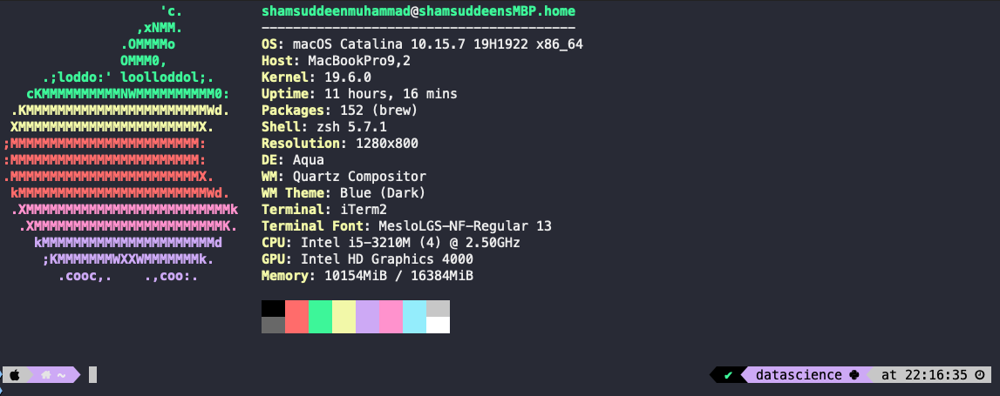

Using command line tool to obtain data
Data can be obtained in several ways—for example by downloading it from a server, querying a database, or connecting to a Web API. Sometimes, the data comes in a compressed form or in a binary format such as a Microsoft Excel Spreadsheet. Tools such as curl, tar, wget, csvtool and others can be used to download data. —Data Science at command Line

Downloading from the Internet using Curl
Curl and wget are command line tools that allows you to download files from the Internet. curl and wget are installed by default on most Linux systems. if you do not have either tool installed, you can use the commands below to install curl and wget on Ubuntu.
sudo apt install curl
sudo apt install wgetIf you are using a Mac, you can install curl and wget using the following commands:
brew install curl
brew install wgetHow to Use Curl
The curl syntax is :
curl [options] [URL...] In its simpform, curl is used to download a file from the Internet without any options.
curl example.comThe command above will download and print the source code of the example.com homepage in your terminal window.
Save the Output to a File
Rather than displaying to the standard output, we can use the -o option to save the output to a file.
The above example will save the output to a file named example.html instead of printing it to the terminal.
curl -o example.html example.com # OR
curl http://example.com --output filenameOR
curl example.com -o example.htmlYou can also redirect the output to a file using the > operator.
curl -o example.com > example.htmlSometimes, it’s a good idea to set the verbose mode on using -V option. This may provide useful information about the progress of the download.
curl -v example.comcurl outputs a progress meter that shows the download rate and the expected time of completion. You can also use the -s option to hide the progress meter and the progress.
curl -s example.comFollowing Redirects
When accessing shortened URL with curl, such as: http://bit.ly/, we need to set the -L option to automatically follow redirects
curl -L http://bit.ly/Using Curl to Download from FTP server
Curl has over 20 built-in FTP commands. You can use curl to download files from FTP servers as follows:
curl -s "ftp://ftp.gnu.org/welcome.msg" | trimHow to use Wget Command
The wget command is similar to curl, but it does not print the output to the terminal. Instead, it saves the output to a file. Its syntax is shown below:
wget [options] [URL...]You can download a file from the Internet using wget and saved to a file with same name.
wget example.comYou can also save the output to a diffrent file name using the -O option.
wget -O example.html example.comYou can save in a specify folder using the -P option.
wget -P /home/example.com example.comDifference between Wget and Curl
Wget is similar to Curl, but curl is more powerful. wget is a tool to download files from servers while curl is a tool that let’s you exchange requests/responses with a server.
wget’s major advantage is its ability to download recursively. Wget is command line only. There’s no library.
Curl is powered by libcurl - a cross-platform library with a stable API that can be used by each and everyone.
Curl is generally preferred since it supports more features than wget. For comparison here is the list of features of available with different tools:
Other cool stuff you can do with curl
You can use curl to check weather info from your terminal
!wttr.in/SanFrancisco # to check weather in San Franciscorate.sx: Crypto prices without leaving the terminal by running curl rate.sx
curl rate.sxdict.org: To look up definitions for a word, run curl ‘dict.org/d:word’
curl 'dict.org/d:word'Compressing and Decompressing Files
Large files can be compressed and decompressed.
Compressing Files using tar
tar -cvf example.tar ~/desktop/example/The options used in the above command to create a tar file are:
- c – Creates a new .tar archive file.
- v – Verbosely show the .tar file progress.
- f – File name type of the archive file.
Compressing Files using gzip
tar cvzf example.tar.gz /desktop/examples/
or
tar cvzf example.tgz /desktop/examples/List Content of an Archive File
To list the contents of an archive file, you can use the following command (with t option):
tar -tvf example.tar Decompressing Archivedd File
To uncompress an archive file, you can use the following command (with x option):
tar -xvf example.tar If you want to untar in a different directory then use option as -C (specified directory).
tar -xvf example.tar -C /desktop/example/Finally, you can use unpack command also to decompress the file.
unpack example.tar Csvkit : converting and working with CSV at command Line
csvkit is a suite of command-line tools for converting to and working with CSV, the king of tabular file formats. working with csvkit makes it easy to convert between different formats, and to work with the data in those formats.
You can install csvkit using the following command:
pip install csvkitWe can print the contents of the file using the following command:
bat -A data.csvThe -A option show all non-printable characters such as space, tab, newline, etc.
We can also use another command called csvlook to print the contents of the file nicely.
csvlook data.csvBelow are some of the commands that you can use with csvkit:
- Convert Excel to CSV:
in2csv data.xls > data.csv # Excel to csv
in2csv data.json > data.csv # json to csv
csvstat data.csv # give the statistics of the csv file
csvjson data.csv > data.json # convert csv to json
csvcut -n data.csv # print column names
csvcut -c column_a,column_c data.csv > new.csv # select subset of columns